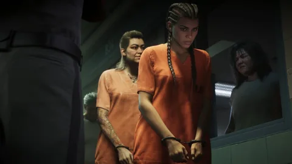
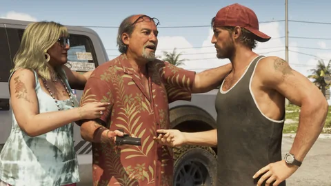
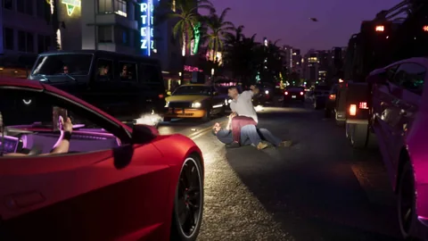
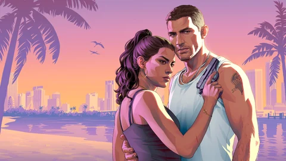

Uma história em capítulos
O texto da edição Ultimate fala de bônus para descobrir “a cada capítulo”. O número de capítulos não foi divulgado.
Oficial1
Missões, GTA VI
Nenhuma missão tem nome oficial ainda. Aqui está a história de Jason e Lucia do jeito que a Rockstar conta, o que os vídeos mostram das missões e o guia que vai ser preenchido a partir de 19 de novembro de 2026.
Cada sequência diz de onde vem: texto da Rockstar, imagem oficial ou anotações de jogadores. Nenhum nome de missão é inventado nem tirado dos vazamentos; os detonados chegam com o jogo. Entender os status.
A história
Jason Duval e Lucia Caminos sempre souberam que as cartas estão marcadas contra eles. Quando um golpe que deveria ser fácil dá errado, eles vão parar no lado sombrio do lugar mais ensolarado dos Estados Unidos, no centro de uma conspiração criminosa que se espalha por todo o estado de Leonida. Para sair dessa, eles vão ter que contar um com o outro mais do que nunca.
Jason cresceu entre vigaristas, passou pelo Exército e trabalha nas Keys para traficantes locais; Lucia está saindo da penitenciária de Leonida, onde foi parar por lutar pela família. Em entrevista à Famitsu, Rob Nelson, da Rockstar North, resume o que vem depois: após o golpe que deu errado, várias pessoas estão atrás deles, eles se escondem em Vice City e buscam dinheiro suficiente para sair dessa.
A Rockstar assume a referência a Bonnie e Clyde: Rupert Humphries, responsável pela narrativa, diz isso à Dazed. Como eles se conhecem, quem está atrás deles e como tudo termina: nada foi divulgado.
O texto da edição Ultimate fala de bônus para descobrir “a cada capítulo”. O número de capítulos não foi divulgado.
Oficial1
Dá para trocar entre Jason e Lucia quando os dois estão juntos, mas algumas missões obrigam a jogar com um deles: Rob Nelson cita à Famitsu uma missão do começo, num grande conjunto habitacional, só com Jason.
Segundo Rob Nelson na Famitsu, fazer uma missão atrás da outra não vai render dinheiro suficiente para fazer a história avançar: também será preciso ganhar dinheiro por fora, assaltando lojas ou esconderijos de gangues.
Um perfil criminal registra seus atos e não some como as estrelas de procurado; alguns objetivos opcionais têm consequências na história.
Os vídeos oficiais
A Rockstar não deu nome a nenhuma missão. Os títulos abaixo descrevem o que se vê: não são nomes de missões.
 IlustraçãoPor volta de 1:16Trailer 1
IlustraçãoPor volta de 1:16Trailer 1Trailer 1, Por volta de 1:16, Sequência 01
Jason e Lucia entram mascarados, de arma em punho, em um Uncle Jack’s Liquor e depois fogem.
Lugares identificados no nosso mapa a partir do vídeo: nada é colocado ao acaso.
 Por volta de 0:16Trailer 2
Por volta de 0:16Trailer 2Trailer 2, Por volta de 0:16, Sequência 02
Brian, ao volante da picape, manda Jason cobrar; a rodada dá errado: perseguição de moto e depois fuga de jet ski com Lucia. A apresentação oficial de Jason confirma essas cobranças para Brian.
 Por volta de 1:15Trailer 2
Por volta de 1:15Trailer 2Trailer 2, Por volta de 1:15, Sequência 03
Lucia, com uma máscara de caveira, mantém funcionários sob a mira numa sala iluminada de vermelho enquanto Jason conduz reféns. Segundo o GameSpot, o letreiro Sinfrontera National Bank estaria legível na imagem. Nada oficial liga esse golpe a Raul.
 Por volta de 1:58Trailer 2
Por volta de 1:58Trailer 2Trailer 2, Por volta de 1:58, Sequência 04
Lucia atira com um lança-granadas de dentro de um veículo crivado de balas, diante de uma van blindada da polícia.
Visto na mídia1
 IlustraçãoAberturaExtended Look
IlustraçãoAberturaExtended LookExtended Look, Abertura, Sequência 05
A dupla vai buscar mercadoria para Boobie Ike num conjunto habitacional; a chegada de uma unidade da polícia vira tiroteio e depois fuga por uma janela. Rob Nelson cita uma missão do começo, num grande conjunto habitacional, só com Jason: a ligação é provável, mas não confirmada.
Lugares identificados no nosso mapa a partir do vídeo: nada é colocado ao acaso.
 IlustraçãoPor volta de 10:50Extended Look
IlustraçãoPor volta de 10:50Extended LookExtended Look, Por volta de 10:50, Sequência 06
No terraço do bar Effluvia, Brian e Lori recebem a dupla; segundo as anotações dos jogadores, o contato de Brian só quer contratar um dos dois. Em seguida vem uma montagem de assaltos a postos de gasolina.
Lugares identificados no nosso mapa a partir do vídeo: nada é colocado ao acaso.
 IlustraçãoAté 16:49Extended Look
IlustraçãoAté 16:49Extended LookExtended Look, Até 16:49, Sequência 07
Lucia dirige o carro de Raul durante uma longa perseguição; o jogo passa sozinho de Jason, que atira do banco de trás, para Lucia ao volante. No fim, Raul paga Jason e pede que os dois deixem o celular ligado.
 IlustraçãoPor volta de 20:00 a 25:40Extended Look
IlustraçãoPor volta de 20:00 a 25:40Extended LookExtended Look, Por volta de 20:00 a 25:40, Sequência 08
A dupla escolta um executivo do grupo de mídia Megamundo do aeroporto até uma festa de inauguração; homens armados atacam. Jason intercepta os rádios deles e detona uma carga para criar uma distração. Segundo Rob Nelson, nesta missão dá para trocar de personagem livremente.
Lugares identificados no nosso mapa a partir do vídeo: nada é colocado ao acaso.
Edição Ultimate
Os únicos conteúdos do jogo com nome oficial fazem parte da edição Ultimate. Eles já têm página própria no site.

Edição Ultimate
Saquear o esconderijo de uma das gangues mais barulhentas de Southside e depois fugir com itens especiais e contrabando, segundo o texto da edição.
Oficial1

Edição Ultimate
Encontrar carros clássicos abandonados para Wyman, colecionador excêntrico e “fixer” da região, e devolver a eles o brilho de antes.
Não foi divulgado quando esses conteúdos são liberados, nem se eles existem sem a edição Ultimate.
O guia
Nenhuma missão foi divulgada com nome até agora. Desde o lançamento, cada missão terá sua ficha: capítulo, tipo, personagens, lugares, requisitos, objetivos, recompensas, duração, detonado passo a passo e dicas, cada um com sua fonte.
 0
0O guia, Tipo de missão
As missões da história de Jason e Lucia, capítulo por capítulo.
Nenhuma missão deste tipo foi publicada ainda com o nome: a ficha abaixo mostra o que cada uma vai trazer.
 0
0O guia, Tipo de missão
As missões oferecidas por outros personagens, fora da história principal.
Nenhuma missão deste tipo foi publicada ainda com o nome: a ficha abaixo mostra o que cada uma vai trazer.
 0
0O guia, Tipo de missão
Os golpes planejados: bancos, joalherias, lojas, esconderijos.
Nenhuma missão deste tipo foi publicada ainda com o nome: a ficha abaixo mostra o que cada uma vai trazer.
 0
0O guia, Tipo de missão
Os encontros e eventos que aparecem pelo caminho.
Nenhuma missão deste tipo foi publicada ainda com o nome: a ficha abaixo mostra o que cada uma vai trazer.
 0
0O guia, Tipo de missão
Os conteúdos incluídos em uma edição do jogo.
Nenhuma missão deste tipo foi publicada ainda com o nome: a ficha abaixo mostra o que cada uma vai trazer.
A ordem recomendada será definida missão por missão, com base no próprio jogo: nada foi divulgado até agora.
Fontes oficiais
A Rockstar conta a história aos poucos: três trailers, apresentações de personagens, um texto de edição e uma longa demonstração.
O primeiro trailer apresenta Lucia, Jason e Vice City, e já mostra a dupla no meio de um assalto.

Jason trabalha para os traficantes das Keys, Raul recruta assaltantes, Brian escoa a mercadoria pelo estaleiro.

A edição Ultimate nomeia dois conteúdos, o esconderijo dos PTT Youngin$ e a coleção de Wyman, e fala de bônus para descobrir a cada capítulo.

Quatro sequências da história, da batida policial ao ataque no Megamundo, sem nenhum nome de missão na tela.

Rob Nelson detalha as trocas de personagem, os golpes sozinho ou em dupla, os esconderijos de gangues marcados no mapa e o papel do dinheiro.

Rob Nelson diz ter terminado o jogo em cerca de 80 horas, incluindo a história principal e parte dos objetivos opcionais.

Uma sequência “vista” vem de um vídeo oficial; o título dela continua descritivo enquanto a Rockstar não divulgar o nome da missão.
Observações dos jogadores
Os jogadores analisam cada cena nos mínimos detalhes. Veja o que eles afirmam, citado como tal.
Um nome de missão só vai entrar no guia com uma fonte oficial: o próprio jogo, um vídeo ou um texto da Rockstar.
Perguntas em aberto
O guia está pronto; só faltam os números do jogo.
Nem número de missões nem número de capítulos: só a divisão em capítulos é oficial.
Nenhum valor foi divulgado para uma missão, um golpe ou um esconderijo.
Nada indica se uma missão pode ser perdida de vez, ou jogada de novo.
Eles existem e influenciam a história; a forma exata deles não foi detalhada.
O esconderijo dos PTT Youngin$ e a coleção de Wyman fazem parte da edição.
Cada resposta vai entrar no guia com a sua fonte assim que for divulgada.
Ferramentas do site
Enquanto as missões não chegam, prepare seus cálculos e veja os personagens que passam trabalhos para a dupla.
No lançamento, cada ficha de missão terá seu quadro da calculadora e uma caixa para marcar e acompanhar seu progresso.
Perguntas
As perguntas que as pessoas digitam num buscador, com respostas curtas e datadas.
21 fontes consultadas
Cada sequência e cada frase desta página remete a uma fonte com data. As páginas foram conferidas em 4 de outubro de 2026 por meio de um buscador: abri-las diretamente estava bloqueado a partir do nosso ambiente de trabalho naquele dia.
Página, texto ou vídeo publicados pela Rockstar nos próprios canais (site de GTA VI, Newswire, trailers, Extended Look), ou pela Take-Two, Sony ou Microsoft, escritos como eles disseram, com a data.
O que uma imagem ou sequência oficial mostra sem um texto da Rockstar que diga isso (um plano de trailer, uma captura, um momento do Extended Look, com o minuto exato quando é conhecido), ou o que um veículo de imprensa identificado relata, incluindo declarações de um responsável da Rockstar, com o veículo e a data.
Comparação feita por jogadores, por uma wiki ou por um site de fãs (lugar real, ator, condado). Citada como tal, nunca apresentada como confirmada.
Pergunta sem resposta publicada: preço, compra, acesso, papel na história. Anotamos a pergunta para não adivinhar a resposta.
O resumo oficial da história e as apresentações de Jason, Lucia, Raul, Brian e Boobie.
Os trailers de onde vêm as sequências e os quadros desta página.
A apresentação de cerca de 26 minutos, gravada no PS5, de onde vêm as quatro sequências da história.
Bônus “a cada capítulo”, esconderijo dos PTT Youngin$ para saquear e coleção de Wyman.
O golpe que deu errado e a fuga para Vice City, o personagem às vezes obrigatório, os golpes sozinho ou em dupla, os esconderijos de gangues e o papel do dinheiro.
A mesma entrevista, em inglês; as falas de Rob Nelson citadas aqui vêm dela.
Repete a frase de Rob Nelson à Famitsu: será preciso ganhar dinheiro fora das missões para fazer a história avançar.
Rob Nelson (Famitsu): uma missão do começo, num grande conjunto habitacional, só com Jason.
A troca automática de Jason para Lucia durante a fuga com Raul, e a troca livre durante a missão do Megamundo.
Rupert Humphries, responsável pela narrativa na Rockstar, sobre uma trama construída como uma história “no estilo Bonnie e Clyde”.
Cerca de 80 horas, com a história principal e parte dos objetivos opcionais, alguns dos quais influenciam a história (New York Times).
O Trailer 2 plano a plano: a rodada de cobranças para Brian, o letreiro do banco assaltado, a fuga.
O perfil criminal que registra seus atos, e a abertura da demonstração.
A missão de escolta no Megamundo e o ataque que a interrompe.
O encontro no bar Effluvia por volta de 10:50 e a montagem de assaltos que vem depois.
O assalto à loja de bebidas do Trailer 1, com a minutagem.
As quatro sequências da história do Extended Look; os nomes de personagens secundários citados ali ainda precisam ser conferidos no vídeo.
Repete o texto da edição: o esconderijo dos PTT Youngin$ e a coleção de Wyman, exclusivos da edição Ultimate.
Alguns jogadores deduzem a ordem das cenas pela ausência da tornozeleira durante o golpe.
Lista de missões sem nome oficial nem fonte da Rockstar; o site não usa nenhuma delas.
Mistura falas da Rockstar e de um criador convidado: os níveis de golpes e o valor de cerca de $ 1.000 ainda estão a confirmar.
O que não fazemos. Nenhum dado dos vazamentos de 2022 ou de 2026, nenhum nome de missão inventado, nenhum valor chutado. Os status são explicados no Tutorial.
A calculadora
Os ganhos das missões chegam com o jogo. Escreva quanto uma missão renderia, quanto tempo ela dura e a sua parte: a calculadora compara a missão com suas outras atividades, por hora de jogo.
E depois?
Cada ficha será completada com o jogo: o que se encontra lá, o que se faz lá, quanto rende. Nada inventado até lá.